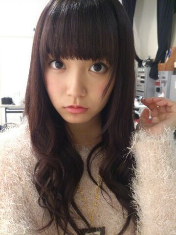
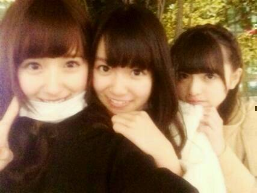
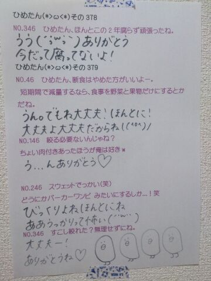

| 2014/03 18 Tue | ひめたん(*>ω<*)そ の421 |
ぺいっ！

春になる前に
もこもこひめたん貼っちゃう
左手どうしたのって？知らんがな
乃木坂と、まなぶ
発売になりました＼(^ω^)／
ひめたんはゲットしました！
みんなはもうゲットしたのかな？
なんかねー
こんなことあったなーって思って懐かしい！
この本は乃木坂ファミリーさんは
もちろん楽しんでいただけると思うけど
乃木坂ちゃんのこと知らないよーって方も
考えを深めるのにぴったりな一冊になってます。
本自体がワークシートになってるから
あなたの考えもぜひ書いてみてね
答えはないのです。
うーん深い(゜ν゜)ニホンゴムズカスィネー

みさみさ (衛藤美彩ちゃん)
あしゅりん (齋藤飛鳥ちゃん)
おねーちゃんと妹ちゃん。と、ひめたん
こんな三姉妹はどうかしら＼(^ω^)／

 突然だけど
突然だけど
きゅんきゅん王国の主食ってな〜に〜？
残念なお知らせですが
ひめがグルメではないので
正直なんでもいいです。
おやつはぷりんがいいなー。
ひめたんは集めている
キャラクターグッズとか何かありますか？
くまのがっこうの
ジャッキーちゃんがすきです！
わからない方ググッてみて(＊^^＊)かわいーよー
お魚天国のお姫様って普段なにしてるんですか
知りませんし興味もありません(即答)
姫は、今までで最高
何時間眠り続けられたのですか？
それが全然寝れないの(´；；｀)
最近また２時間半おきに目が覚めちゃうの
ひめたんにとってのささいな幸せって何ですか？
なんだろうねー
お風呂でぽけーっとしてる時は
多分幸せなんだと思う
1日のいろんなことをとりあえず
リセットしてくれる気がするからね。
高校に合格しました！！
姫！褒めて下さいませ！笑
姫モードのままがいいのかしら(・∀・)
おめでとう！よくやったわね！
高校は人生の内３年間しかないんだから
後悔のないようにね！
何かひとつ夢中になれるものに
出会えること祈って......ます
最後の姫たんじゃなくて日芽香からね
カザフスタンはひめたんに行ったことあるの？
逆！逆だよまーちがえないでー＼(^ω^)／
ひめたんお魚みたいで可愛いー！
うん、ねー褒めてる？
それ喜んでいいやつ？
お魚みたい......まーいーやとにかくありがと♪♪
ひめたんのブログの
コメント欄下２ケタに46を踏んだ方へ
手書きでコメ返するコーナー
＼ ひめたん46 ／

赤が不在だったので黒にしてみました
あちゃー黒ペン元気ないみたい......
いつもたくさんのコメント
ありがとうございます
腰痛のことに詳しい優しい方多すぎ(´；；｀)
はよ治さなくちゃねー
みんな心配してくれてほんとにありがとー♪♪
そしてほかにもたくさん楽しいお話ありかとう
ひめたんは今日の春一番で
みんなが飛ばされてないか無事なのか
それがいちばん気になるよー！
(＊´・ω・＊)
コメント(595)
2014/03/18 23:36